Starter Page
Esse dolorum voluptatum ullam est sint nemo et est ipsa porro placeat quibusdam quia assumenda numquam molestias.
South Indian Cuisine
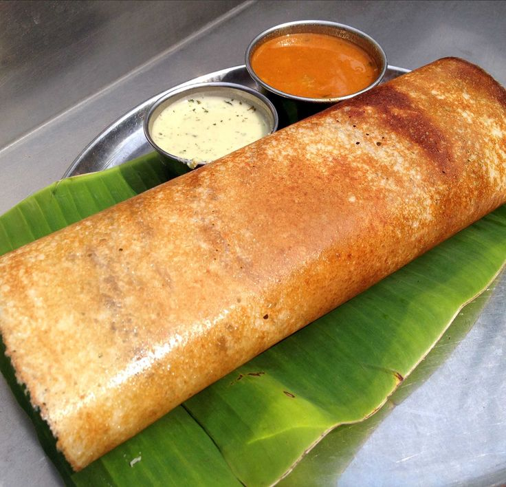
Dosa
A fermented rice and lentil pancake, dosa is a versatile dish served with sambar (a lentil-based vegetable stew) and chutneys
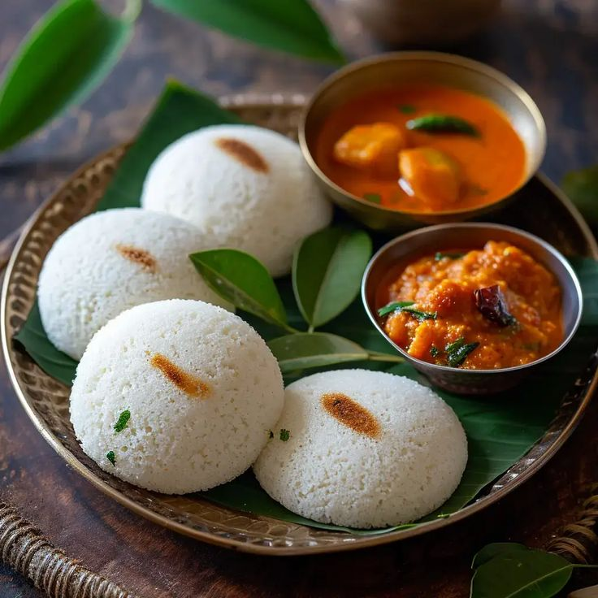
Idli
A soft, steamed rice and lentil cake, typically served as breakfast with sambar and coconut chutney.
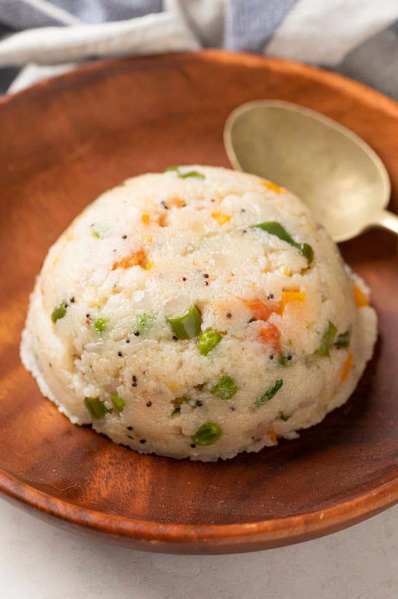
Upma
A savory porridge made from semolina (rava), often cooked with vegetables, mustard seeds, and curry leaves. It’s a common breakfast item across South India.
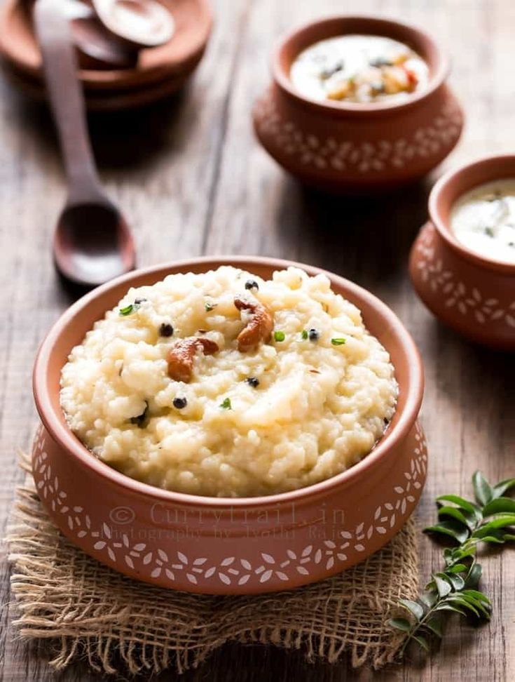
Pongal
A popular dish in Tamil Nadu, especially during the Pongal festival, it consists of rice cooked with lentils, black pepper, ghee, and cashew nuts.
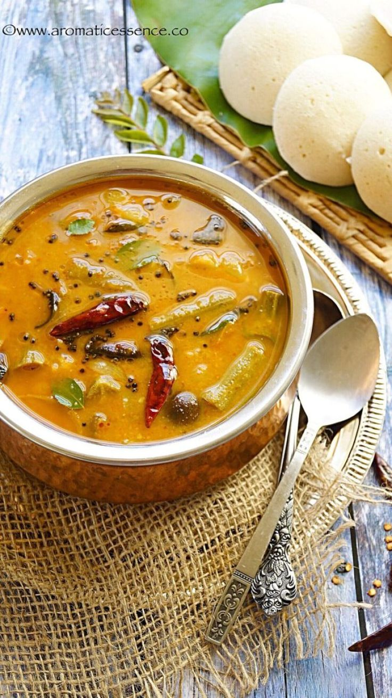
Sambar
A tangy and spicy lentil stew made with vegetables and tamarind, flavored with sambar powder (a blend of spices).
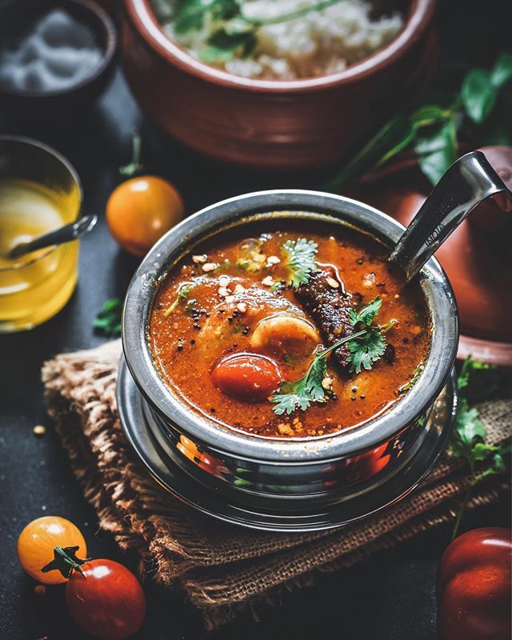
Rasam
A thin, spicy soup made from tamarind, tomatoes, and spices like black pepper and cumin.
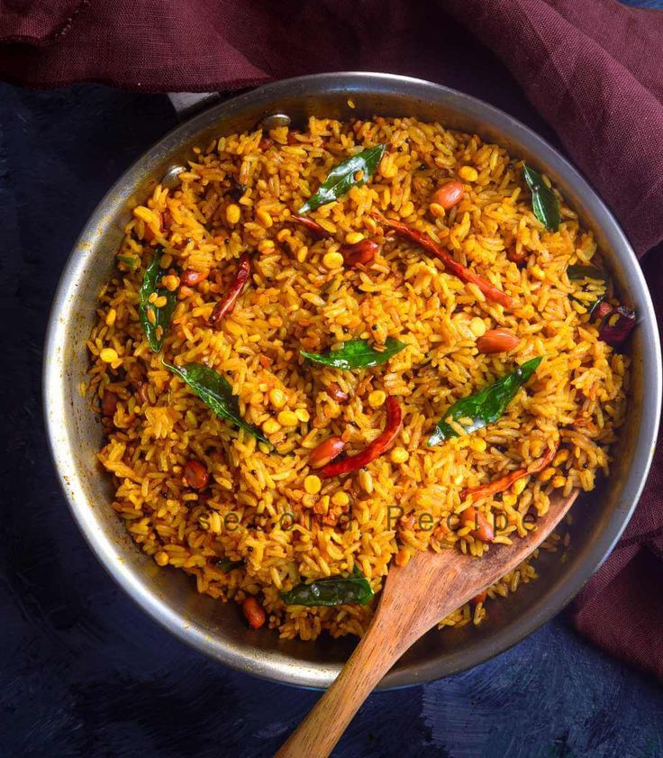
Puliyogare
Also known as tamarind rice, this dish is a popular offering at temples and homes in Tamil Nadu and Karnataka.
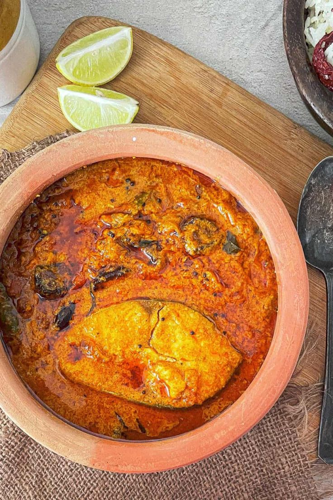
Kerala Fish Curry
A staple in coastal Kerala, this dish is made with fish cooked in a tangy tamarind or raw mango gravy, flavored with coconut, curry leaves, and chilies.
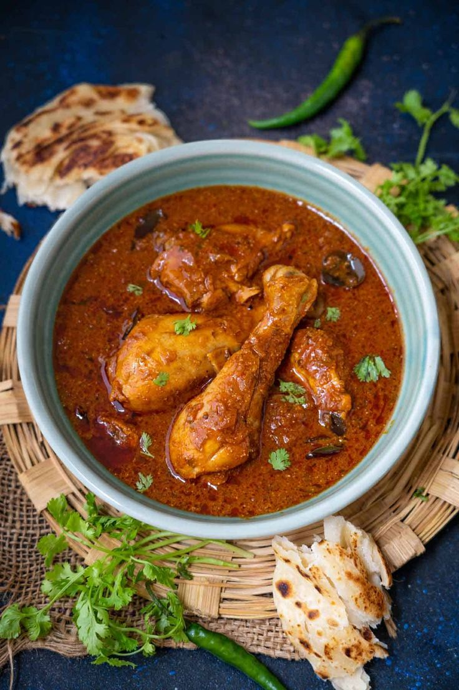
Andhra Chicken Curry
Andhra chicken curry is made with red chili powder, garam masala, and a combination of spices that give it a fiery kick.

Prawn Moilee
A mild, coconut-based prawn curry from Kerala, Moilee has a creamy texture and is subtly spiced, making it a perfect accompaniment to steamed rice or appams.
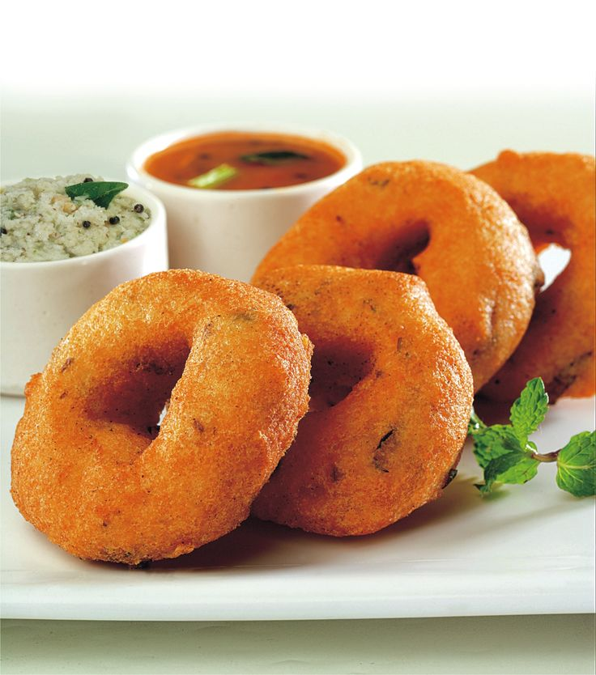
Medu Vada
A deep-fried savory doughnut made from urad dal (black lentils), Medu Vada is crispy on the outside and soft on the inside.
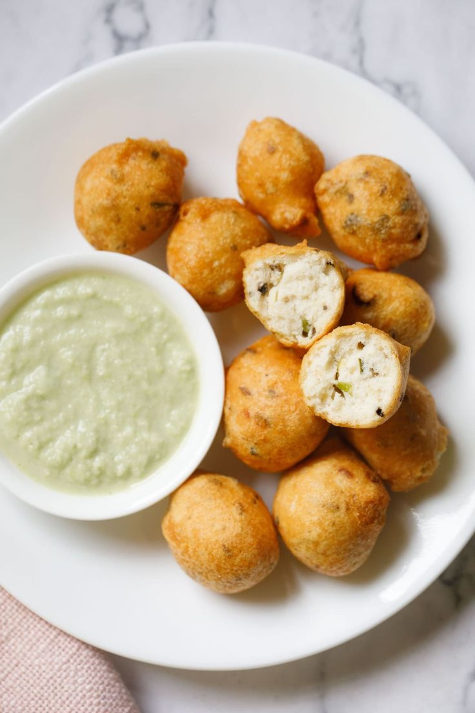
Bonda
A popular snack across South India, Bonda is a deep-fried dumpling with various fillings, such as mashed potatoes or lentils.
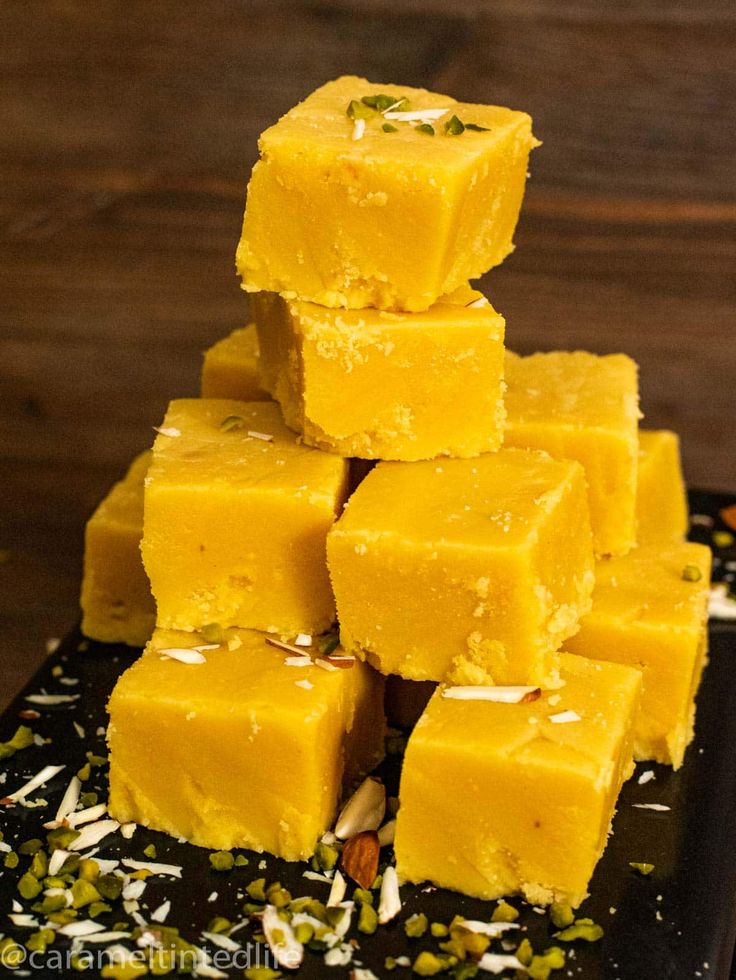
Mysore Pak
A sweet snack from Karnataka made from gram flour, sugar, and ghee.
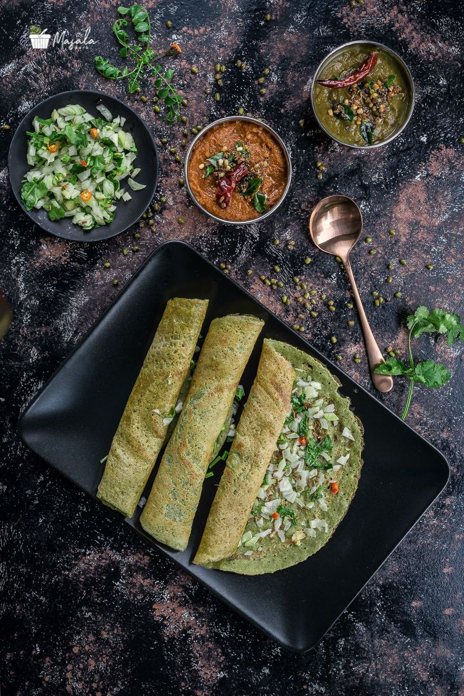
Pesarattu
A green gram dosa from Andhra Pradesh, Pesarattu is crispy and flavorful, often served with ginger chutney.